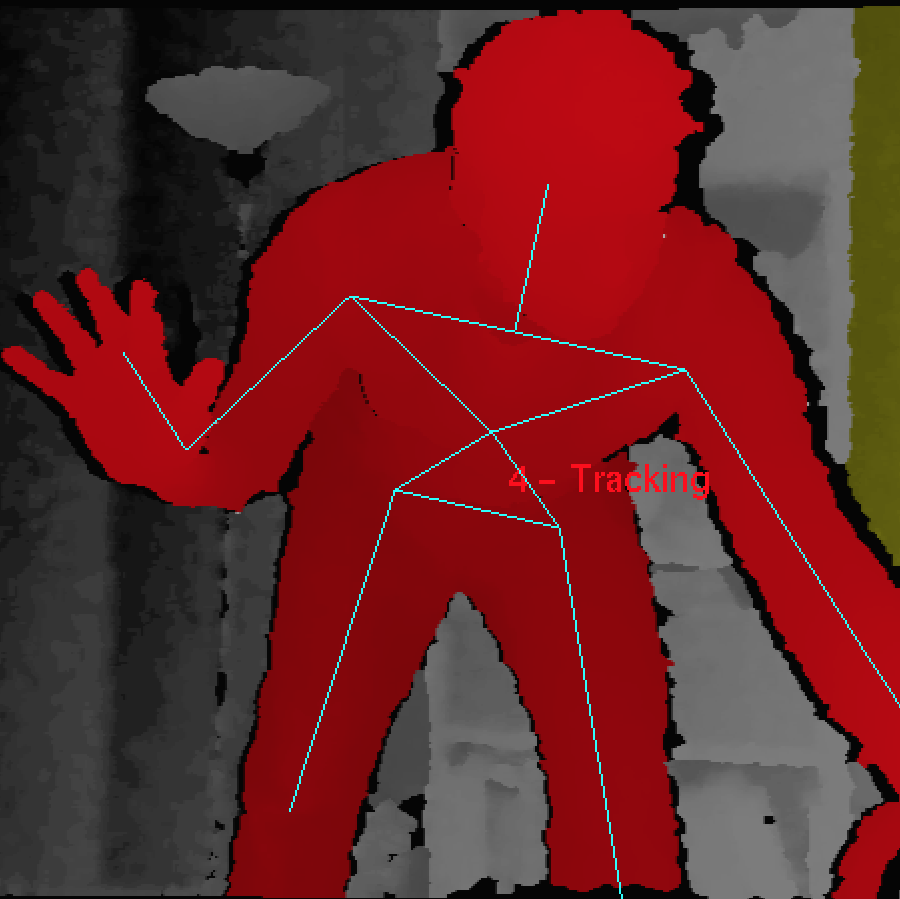
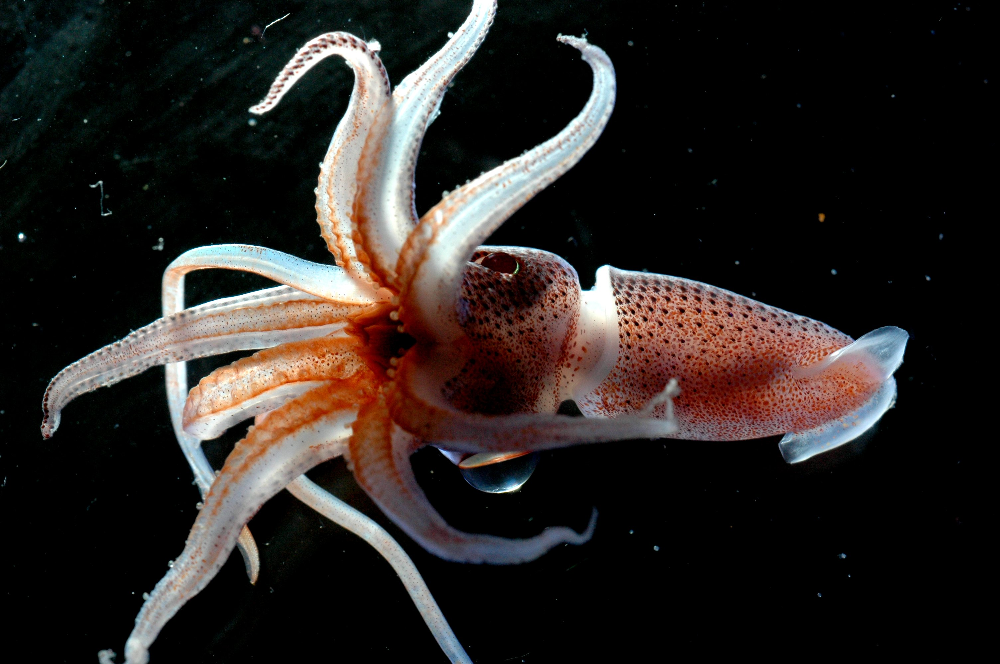

a side project using the kinect to track hand gestures to draw a ribbon path. The application was projected on a LED tile wall in stockholm

squidvent is an event planning web and iOS application developed as a side project and will be available mid 2014.
an IVR (interactive voice response) system for patient-centered monitoring, case management, and point-of-care decision support.